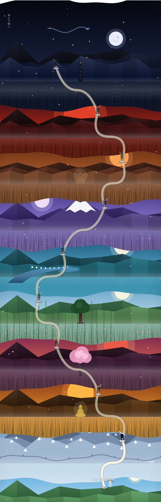
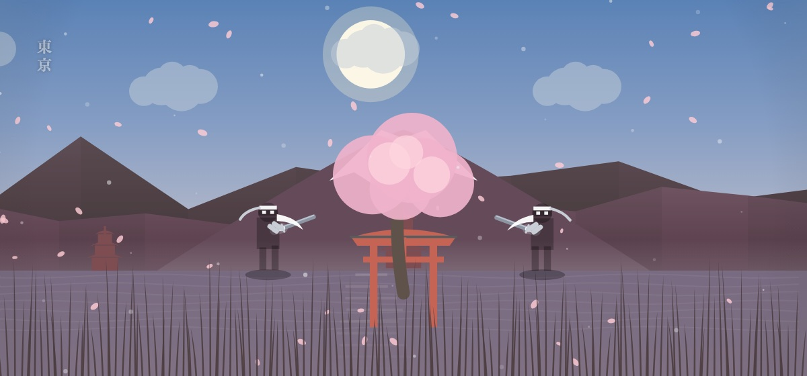

I · LA LEYENDA
Ocho maestros custodian el camino.
Kuro escogió este camino.Peleó con los ocho maestros y les ganó a los ocho.
No se quedó con sus espadas.Se las devolvió, para que hubiera con quién medirse.
Desde ese día nadie lo ha bajado.Su espada es negra y no la ha soltado.
Lleva mil años esperando al siguiente.Hoy le tocas tú.
NUEVE ACEROS
Ocho se arrancan.El noveno se le quita a él.
Cada maestro que cae suelta la suya. No se compran, no se cambian, no se regalan: se traen puestas o no se tienen.
II
El ascenso
DONDE EMPIEZA TODO EL MUNDO
Un jardín.Una espada sin filo.
El acero decide el cielo. Gana la primera katana y el jardín se acaba: el mundo por el que caminas cambia con la espada que llevas puesta.
EL MAPA
Nueve mundos.Un solo sendero.

ENTRENA
Nueve retos.Ninguno te pide ganar.

SANGRE CONTRA SANGRE
SIETE MANERAS DE MEDIRTE
III · LA MESA
Kuro es el juego.Detrás hay una mesa de trabajo.
Backtest, registro, bitácora y números. Lo que se entrena en la montaña se mide aquí.
Arriba no se llega ganando.Se llega sin romperse.
MIL AÑOS ESPERANDO.
HOY TE TOCA A TI.
NORTHPOINT · TRADING GAME · entrenamiento, no ejecución